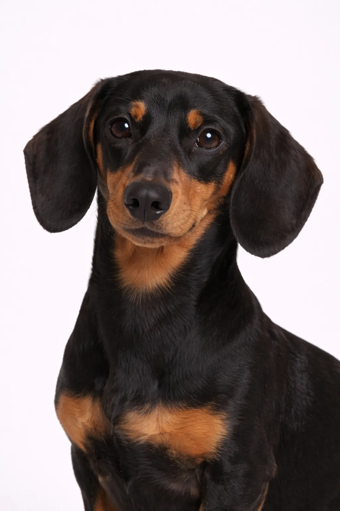

猎犬组
小型
腊肠犬
聪明、固执的小型犬种，是绝佳的伴侣。
起源
德国
寿命
12-16 年
身高
13-23 cm
5-9 in
5-9 in
体重
5-15 kg
11-33 lbs
11-33 lbs
品种评分
活力水平3/5
美容需求2/5
可训练性3/5
适合儿童3/5
适合公寓5/5
吠叫程度4/5
性格
聪明固执忠心活泼爱玩
概述
这种标志性的'腊肠犬'以其长而低矮的体型闻名。好奇、活泼、迷人，叫声响亮，腊肠犬聪明勇敢，有时甚至有些鲁莽。o the point of rashness.
性格
腊肠犬大胆好奇，带有固执的一面。它们与主人关系亲密，但对陌生人可能持怀疑态度。叫声出奇地响亮。
健康
总体健康，寿命12-16年。常见问题包括髌骨脱位和牙齿问题。定期兽医检查和预防性护理非常重要。保持健康体重有助于预防多种健康问题。
运动
每日散步和定期玩耍即可满足中等运动需求。它们喜欢体力活动与休息时间相结合。互动游戏和训练课程能提供精神刺激。规律的运动让它们保持健康和快乐。
⦿ 这个品种适合您吗？
✓ 最适合
- 公寓居民
- 单身和情侣
- 想要小型但勇敢犬的人
- 老年人
- 喜欢有个性犬的人
✗ 不太适合
- 有幼儿的家庭
- 想要容易训练犬的人
- 喜欢跑步或徒步的活跃人士
- 楼梯多的住所
我们的评价: 腊肠犬将巨大的个性装在独特的小身板里。非常适合公寓和城市生活。可能有些固执，易出现背部问题。最适合欣赏其独立精神的主人。